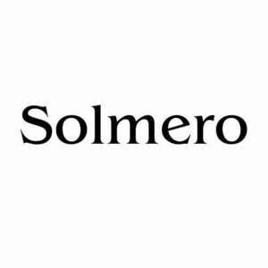

Trade Mark Journal No.2026/011 13 March 2026
UK00004345611 25 February 2026 (3,14,18)

- Class 3
- Skincare cosmetics; Cosmetic moisturisers; Anti-aging creams [for cosmetic use]; Anti-ageing creams [for cosmetic use]; Suncare lotions [for cosmetic use]; Facial moisturisers [cosmetic]; Skin cleansers [cosmetic]; Sunscreens [for cosmetic use]; Acne cleansers, cosmetic; Cosmetic facial lotions; Facial lotions [cosmetic]; Creams (Cosmetic -); Cosmetic creams; Facial cleansers [cosmetic]; Anti-aging moisturizers used as cosmetics; Sunscreen [for cosmetic use]; Skin balms [cosmetic]; Anti-wrinkle creams [for cosmetic use]; Anti-ageing serums for cosmetic purposes; Cosmetics and cosmetic preparations; Cosmetic creams for the skin; Skin creams [cosmetic]; Skin creams [for cosmetic use]; Moisturising skin lotions [cosmetic]; Facial creams [cosmetic]; Facial creams [for cosmetic use]; After-sun lotions [for cosmetic use]; Skin care lotions [cosmetic]; Cosmetic products in the form of aerosols for skincare; Cleansing creams [cosmetic]; Sunscreen creams [for cosmetic use]; Skin care creams [cosmetic]; Cosmetic creams for skin care; Moisturising skin creams [cosmetic]; Anti-aging skincare preparations; Cosmetic creams and lotions; Cosmetic soaps; Cosmetic hair lotions; Moisturisers [cosmetics]; Cosmetic nourishing creams; Cosmetic massage creams; Cosmetic skin fresheners; Skin whitening preparations [cosmetic]; Skin toners [cosmetic]; Skin cream [for cosmetic use]; Hair care lotions [for cosmetic use]; Self-tanning preparations [cosmetic]; Cosmetics; Skin moisturizers used as cosmetics; Hair care creams [for cosmetic use]; Facial creams [cosmetics]; Anti-wrinkle cream [for cosmetic use]; Cosmetic soap; Facial toners [cosmetic]; Cosmetic products for the shower; Skin hydrators for cosmetic purposes; Anti-aging serum for cosmetic use; Facial scrubs [cosmetic]; Skin care oils [cosmetic]; Tonics [cosmetic]; Facial cream [for cosmetic use]; Toning creams [cosmetic]; Cosmetic sunscreen preparations; Cosmetic skin enhancers; Serums for cosmetic purposes; Cosmetic suntan lotions; Cosmetic sun-protecting preparations; Lotions for cosmetic purposes; Skin care (Cosmetic preparations for -); Cosmetic preparations for skin care; Sun care lotions [for cosmetic use]; Moisturising gels [cosmetic]; Cosmetic masks; Cosmetic preparations for skin firming; Moisturising body lotion [cosmetic]; Retinol cream for cosmetic purposes; Exfoliating scrubs for cosmetic purposes; Softening cleanser [cosmetic]; Sun creams [for cosmetic use]; Self tanning creams [cosmetic]; Skin care cosmetics; Cosmetic tanning preparations; Skin conditioning creams for cosmetic purposes; Self tanning lotions [cosmetic]; Beauty care cosmetics; Cosmetic facial masks; Facial masks [cosmetic]; Hydrating creams for cosmetic use; Moisturising concentrates [cosmetic]; Hair tonics [for cosmetic use]; Cosmetic products in the form of aerosols for skin care; Body and facial creams [cosmetics]; Cosmetic creams for dry skin; Cosmetic oils for the epidermis; Facial washes [cosmetic]; Cosmetic powder; Skincare preparations; Self-tanning preparations [cosmetics]; Pro-collagen for cosmetic purposes; After-sun oils [cosmetics]; Skin relief serum [cosmetic]; Cosmetic facial packs; Facial packs [cosmetic]; Skin masks [cosmetics]; Skin recovery creams [cosmetics]; Skin fresheners [cosmetics]; Cosmetic kits; Kits (Cosmetic -); Cosmetic preparations for skin renewal; Cosmetic hair care preparations; Mineral oils [cosmetic]; Cosmetic preparations; Dyes (Cosmetic -); Cosmetic dyes; Anti-aging moisturizers; Facial gels [cosmetics]; Body creams [cosmetics]; Cosmetic sun oils; Facial serum for cosmetic use; Perfumed powders [for cosmetic use]; Cosmetic suntan preparations; Body scrubs [cosmetic]; Eyelashes (Cosmetic preparations for -); Cosmetic preparations for eyelashes; Cosmetic body scrubs; Hair tonic [for cosmetic use]; Cosmetic nail preparations; Cosmetic nail care preparations; Topical skin sprays for cosmetic purposes; Beauty lotions; Cosmetic pencils.
- Class 14
- Jewellery; Necklaces [jewellery]; Brooches [jewellery]; Jewellery brooches; Jewellery, including imitation jewellery and plastic jewellery; Pendants [jewellery]; Bracelets [jewellery]; Brooches [jewellery, jewelry (Am.)]; Ornaments [jewellery]; Amulets being jewellery; Amulets [jewellery]; Pearls [jewellery]; Trinkets [jewellery]; Necklaces [jewellery, jewelry (Am.)]; Fashion jewellery; Jewelry; Gold jewellery; Lockets [jewellery]; Brooches [jewelry]; Jewelry brooches; Brooches being jewelry; Jade [jewellery]; Clasps for jewellery; Charms [jewellery]; Charms for jewellery; Jewellery charms; Enamelled jewellery; Pearls [jewellery, jewelry (Am.)]; Costume jewellery; Ornaments [jewellery, jewelry (Am.)]; Items of jewellery; Jewellery items; Decorative brooches [jewellery]; Trinkets [jewellery, jewelry (Am.)]; Rings [jewellery]; Rings being jewellery; Amulets [jewellery, jewelry (Am.)]; Bracelets [jewellery, jewelry (Am.)]; Pewter jewellery; Jewellery stones; Cloisonné jewellery [jewelry (Am.)]; Wristlets [jewellery]; Cloisonné jewellery; Cloisonne jewellery; Charms [jewellery, jewelry (Am.)]; Lockets [jewellery, jewelry (Am.)]; Chains [jewellery, jewelry (Am.)]; Jewellery products; Rings [jewellery, jewelry (Am.)]; Ivory [jewellery, jewelry (Am.)]; Shoe jewellery; Precious jewellery; Crucifixes as jewellery; Necklaces [jewelry]; Agate as jewellery; Pins [jewellery, jewelry (Am.)]; Jewellery chains; Chains [jewellery]; Medallions [jewellery, jewelry (Am.)]; Ivory jewellery; Jewellery chain; Jewellery in semi-precious metals; Jewellery caskets; Paste jewellery [costume jewelry (Am.)]; Paste jewellery [costume jewelry [Am.]]; Gold plated brooches [jewellery]; Jewellery boxes; Pins [jewellery]; Pins being jewellery; Amber pendants being jewellery; Jewellery for personal adornment; Pendants [jewelry]; Cabochons for making jewellery; Imitation jewellery; Jewellery chain of precious metal for necklaces; Body jewellery; Amberoid pendants being jewellery; Gold thread [jewellery, jewelry (Am.)]; Beads for making jewellery; Jewelry (Paste -) [costume jewelry]; Paste jewelry [costume jewelry]; Jewellery incorporating diamonds; Personal jewellery; Silver thread [jewellery, jewelry (Am.)]; Jewellery for pets; Jewellery in non-precious metals; Fake jewellery; Plastic costume jewellery; Imitation jewellery ornaments; Hat jewellery; Facial jewellery; Clips of silver [jewellery]; Jewellery findings; Crosses [jewellery]; Jewellery in the form of beads; Sterling silver jewellery; Paste jewellery; Jewellery (Paste -); Bracelets [jewelry]; Jewellery incorporating pearls; Amulets [jewelry]; Pearls [jewelry]; Jewellery articles; Articles of jewellery; Jewellery made from gold; Jewellery made from silver; Diamond jewelry; Wire of precious metal [jewellery, jewelry (Am.)]; Jewellery chain of precious metal for anklets; Jewellery containing gold; Lockets [jewelry]; Dress ornaments in the nature of jewellery; Jewellery in precious metals; Clasps for jewelry; Jewellery chain of precious metal for bracelets; Jewellery of precious metals; Jewelry stickpins; Threads of precious metal [jewellery, jewelry (Am.)]; Trinkets [jewelry]; Artificial jewellery; Jewellery for personal wear; Jewellery cases; Charms [jewelry]; Jewelry charms; Jewellery rope chain for necklaces.
- Class 18
- Tote bags; Duffle bags; Duffel bags; Bags; Carry-all bags; Grocery tote bags; Drawstring bags; Cross-body bags; Crossbody bags; Carry-on bags; Sling bags; Diaper bags; Toiletry bags; Duffel bags for travel; Bucket bags; Shoulder bags; Luggage bags; Belt bags and hip bags; Nose bags [feed bags]; Bags (Nose -) [feed bags]; Clutch bags; Kit bags; Carrying bags; Nappy bags; Shoe bags; Belt bags; Messenger bags; Cloth bags; Leather bags; Umbrella bags; Canvas bags; Garment bags; Leather shopping bags; Souvenir bags; Mesh shopping bags; Mesh bags for shopping; Tool bags of leather, empty; Canvas shopping bags; Waterproof bags; Toilet bags; Make-up bags; Makeup bags; Attaché bags; Bags [envelopes, pouches] of leather, for packaging; Bags [envelopes, pouches] for packaging of leather; Bags [envelopes, pouches] of leather for packaging; Bum bags; Suit bags; Reusable shopping bags; Hand bags; Bags for clothes; Baby carrying bags; Gym bags; Courier bags; Leather bags and wallets; Overnight bags; Roll bags; Book bags; Nose bags; Wheeled bags; Tool bags, empty; Shoe bags for travel; String bags for shopping; Barrel bags; Travel bags; Bags for travel; Waist bags; Gladstone bags; Boot bags; Cosmetic bags; Camping bags; Towelling bags; All-purpose carrying bags.
solmero limited